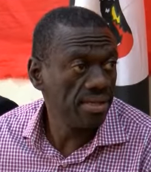

Ugandan court refuses bail to opposition politician Kizza Besigye
2025, August 11

Ugandan court refuses bail to opposition politician Kizza Besigye
2025, August 11
Uganda
On August 8, the High Court of Uganda in Kampala, the capital of Uganda, denied a bail application from opposition leader Kizza Besigye and his ally Obeid Lutale in an ongoing treason case. The court determined they did not meet the minimum six-month remand period required for bail.According to the Daily Monitor, members of Uganda’s legal community expressed concern over the ruling, describing it as inconsistent with prior precedent. The paper said that, in its view, Senior Counsel Peter Walubiri criticised Justice Baguma’s decision, interpreting it as favoring the state for its prior detention of Dr Besigye and expressing disapproval of the judge’s conduct. Nicholas Opiyo, another lawyer, suggested the ruling reflected political pressure, referencing past criticism by President Yoweri Museveni, who has accused judges of being too lenient in granting bail. "It seems the Judiciary has caught a cold following the scorn by the President not to grant bail in certain cases," he said.
Besigye’s lawyer Lukwago likewise condemned the ruling as "disastrous."
The pair's legal team, formed by Senior Counsel Martha Karua, Erias Lukwago, Frederick Mpanga, Luyimbazi Elias Nalukoola and Ernest Kalibala, argued that their remand period started when they were first detained on November 20, 2024, reaching the six-month requirement by the time they requested the bail application on May 28, 2025.
The two prosecutors, Assistant Director of Public Prosecutions (DPP) Thomas Jatiko and Chief State Attorney Richard Birivumbuka, countered their arguments, stating that the DPP was not in charge of the case during the period it was brought before the court martial, and that the actual starting time was February 21 when the pair were formally charged with treason at the Chief Magistrate's Court in Nakawa.
Justice Emmanuel Baguma decided in favor of the prosecution, stating: "It [the evidence before the court] shows that the charges were read to the applicants on February 21, 2025. No cogent evidence was presented to this court to prove the period the applicants claim to have spent in the General Court Martial." Baguma clarified that the court could not rely on information available in the public domain but not presented as evidence, as doing so would amount to improperly gathering evidence on its own. However, he also recognised that the applicants' trial would be fast-tracked under High Court Session Case No. 335 of 2025 in the "interest of justice for both parties."
In a post on social media, Winnie Byanyima, Besigye’s wife, said he and Lutale were arrested by eight men presenting themselves as Kenyan police officers, four of whom took them to Uganda in a vehicle.
According to Ibrahim Ssemujju Nganda, spokesperson for the People’s Front for Freedom, they were transported through the Malaba border post without stopping for routine security checks.
According to the BBC, Besigye was not seen in public for four days, reappearing on November 20 at the court martial.
They face four charges, including possession of two pistols and ammunition, as well as allegedly attempting to acquire weapons from foreign sources in Geneva, Athens, and Nairobi. Both Besigye and Lutale denied all charges.
Uganda's Ministry of ICT and National Guidance, Chris Baryomunsi, said the operation was conducted with the help of Kenyan authorities, though officials in Nairobi denied any awareness of it. According to BBC, reports indicate the arrests had been planned for months, with the assistance of individuals close to them.
Besigye is a four-time challenger against President Museveni, who came to power in 1986, and previously served in the Uganda People's Defence Force as general; he recently launched his PFF party in Kampala on July 8.
According to Reuters, critics of the government, including opposition leader Bobi Wine and rights groups, have expressed concern that the case signals a potential crackdown on the opposition ahead of the next general election, in which President Yoweri Museveni is expected to seek re-election.